25+ No-Bake Christmas Desserts for a Crowd
📌 Save to Pinterest
The oven is already busy with the turkey and the ham — so let dessert take care of itself. This roundup gathers twenty-five no-bake Christmas desserts for a crowd: truffles you can roll by the dozen, cheesecakes that set in the fridge, bars that slice cleanly for a party, and festive cups and parfaits that look like they took hours. No oven needed, no stress, and every one of them tastes like the holidays.
How to plan no-bake desserts for a crowd
No-bake desserts are made for crowds because most of them are made in a pan, a bowl, or a tray — and they scale up easily. Pick one showpiece (a cheesecake or a trifle), one bite-size treat (truffles or bars), and one lighter option (mousse cups or fruit parfaits), and the dessert table is done. Almost everything here needs fridge time, so make them the day before and free up the whole day of the party. Keep chilled desserts cold until serving, and set out small plates so guests can take a little of everything.
Good to know: Everything is written in American English, and measurements use US customary units — cups, tablespoons, and Fahrenheit — for cooks in the United States. Always follow safe food-handling guidance, and keep dairy and egg desserts refrigerated until serving time.
Food safety: keep chilled desserts refrigerated until serving, and refrigerate leftovers promptly. Egg dishes should reach 160°F (71°C)..
Truffles & bites
Small, rich, and easy to make by the dozen — truffles are the simplest crowd dessert there is.
1. Classic Chocolate Truffles

Dark, silky truffles rolled in cocoa — the kind of bite that tastes like a chocolate shop. Roll them small; one or two per guest is plenty.
Ingredients
- 8 ounces semisweet chocolate, finely chopped
- 1/2 cup heavy cream
- 2 tablespoons unsalted butter
- 1 teaspoon vanilla extract
- 1/4 cup unsweetened cocoa powder, for rolling
- 1 pinch salt
Directions
- Place the chopped chocolate in a heatproof bowl.
- Heat the cream in a small saucepan until it just simmers, then pour it over the chocolate. Let it sit for 2 minutes.
- Stir in the butter, vanilla, and salt until the mixture is smooth and glossy.
- Refrigerate for 2 hours, until firm enough to scoop.
- Scoop into balls, roll between your palms, then roll in cocoa powder. Chill until serving.
2. Peppermint Truffles

Cool peppermint truffles rolled in crushed candy cane. They taste like Christmas and they look like it too, with their red and white sparkle.
Ingredients
- 8 ounces white chocolate, finely chopped
- 1/3 cup heavy cream
- 1 tablespoon unsalted butter
- 1/2 teaspoon peppermint extract
- 1/2 cup crushed candy canes, for rolling
Directions
- Place the white chocolate in a heatproof bowl.
- Heat the cream until it just simmers, then pour over the chocolate. Let it sit for 2 minutes.
- Stir in the butter and peppermint extract until smooth.
- Refrigerate for 2 hours, until firm.
- Scoop into balls and roll in crushed candy cane. Chill until serving.
3. Peanut Butter Balls

Creamy peanut butter balls dipped in chocolate, finished with a drizzle. They are the first thing to disappear from the dessert table.
Ingredients
- 1 cup creamy peanut butter
- 1/4 cup unsalted butter, softened
- 1 1/2 cups powdered sugar
- 1 teaspoon vanilla extract
- 8 ounces semisweet chocolate, melted
- 1 pinch salt
Directions
- Beat the peanut butter, butter, powdered sugar, vanilla, and salt until smooth.
- Roll into balls and place on a lined baking sheet.
- Freeze for 30 minutes, until firm.
- Dip each ball in melted chocolate, letting the extra drip off.
- Chill for 30 minutes, until the chocolate is set.
4. Rum Balls
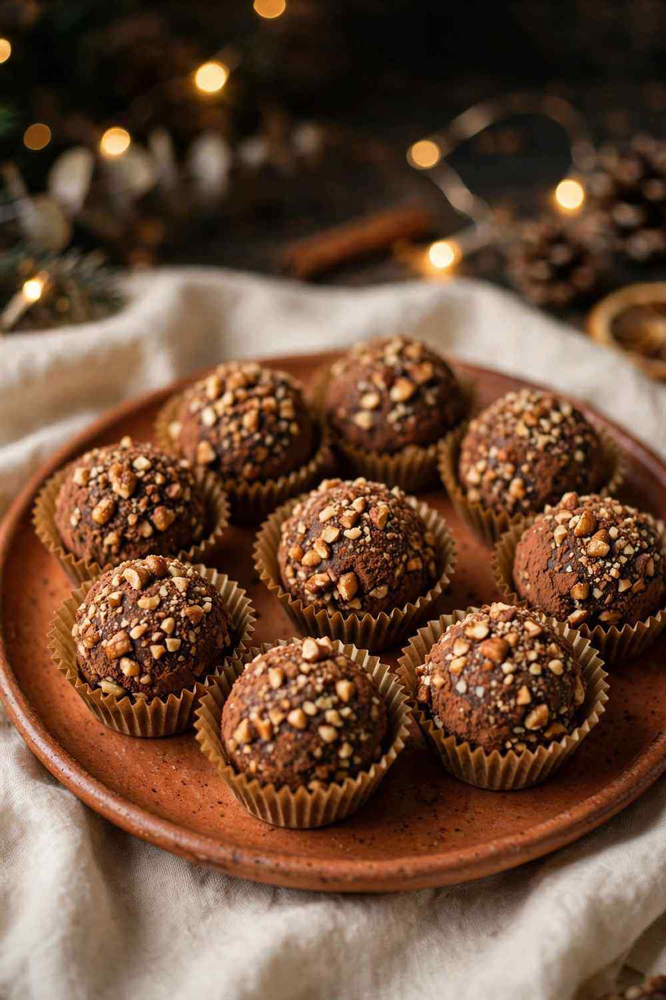
Rich, boozy rum balls rolled in cocoa or nuts. They keep for days and taste better with a little time, so make them early.
Ingredients
- 2 cups vanilla wafer crumbs
- 1 cup powdered sugar
- 1/4 cup unsweetened cocoa powder
- 1 cup finely chopped pecans
- 1/3 cup dark rum
- 3 tablespoons honey
- 1/2 cup cocoa powder or chopped nuts, for rolling
Directions
- Stir the wafer crumbs, powdered sugar, cocoa, and pecans together.
- Add the rum and honey and mix until the crumbs hold together.
- Roll into balls and roll in cocoa or chopped nuts.
- Refrigerate for at least 2 hours — they taste better the next day.
- Keep chilled in an airtight container for up to 1 week.
5. Coconut Snowballs

White chocolate and coconut bites rolled in shredded coconut until they look like little snowballs. Light, sweet, and made for a winter table.
Ingredients
- 1 can (14 ounces) sweetened condensed milk
- 3 cups sweetened shredded coconut, plus more for rolling
- 1 teaspoon vanilla extract
- 8 ounces white chocolate, melted
- 1 pinch salt
Directions
- Stir the condensed milk, coconut, vanilla, and salt together.
- Refrigerate for 1 hour, until firm enough to roll.
- Roll into balls and dip in melted white chocolate.
- Roll in extra coconut while the chocolate is still wet.
- Chill for 30 minutes, until set.
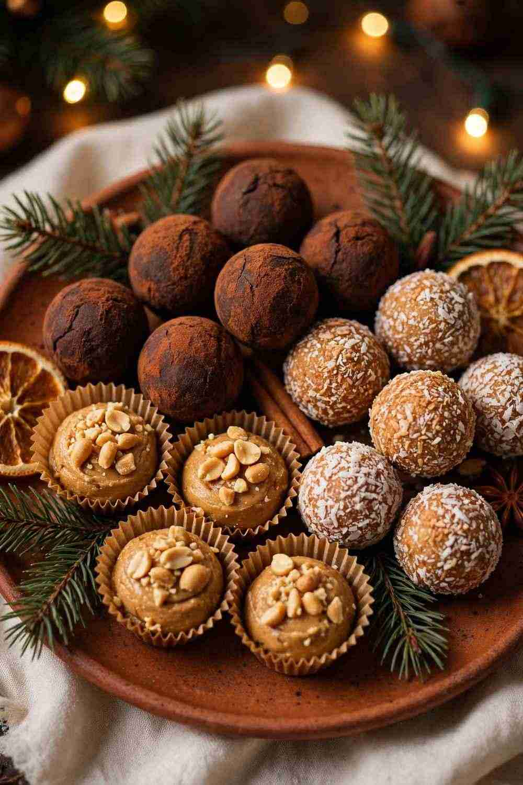
Cheesecakes & pies
A chilled cheesecake or a silky pie is the showpiece of a no-bake dessert table — slice it at the table and let everyone watch.
6. No-Bake Cranberry Cheesecake

A creamy cheesecake topped with a bright cranberry sauce. The tart cranberries cut through the richness and the red topping looks made for Christmas.
Ingredients
- 1 1/2 cups graham cracker crumbs
- 6 tablespoons unsalted butter, melted
- 2 tablespoons sugar
- 16 ounces cream cheese, softened
- 3/4 cup powdered sugar
- 1 cup heavy cream, whipped
- 1 teaspoon vanilla extract
- 1 cup cranberry sauce
Directions
- Mix the crumbs, butter, and sugar, then press into a 9-inch springform pan. Chill for 30 minutes.
- Beat the cream cheese and powdered sugar until smooth, then fold in the whipped cream and vanilla.
- Spread the filling over the crust and smooth the top.
- Spoon the cranberry sauce over the top.
- Refrigerate for at least 6 hours, or overnight, before slicing.
7. Peppermint Cheesecake
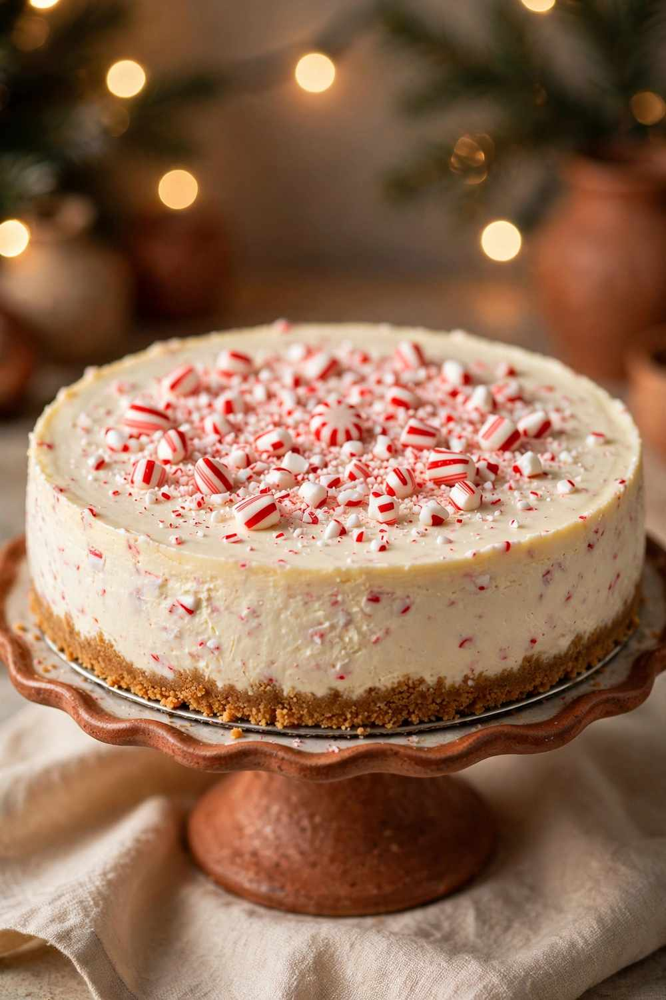
A cool, minty cheesecake with crushed candy cane on top. It tastes like a peppermint stick and it slices cleanly from the fridge.
Ingredients
- 1 1/2 cups chocolate cookie crumbs
- 6 tablespoons unsalted butter, melted
- 16 ounces cream cheese, softened
- 3/4 cup powdered sugar
- 1 cup heavy cream, whipped
- 1/2 teaspoon peppermint extract
- 1/2 cup crushed candy canes
Directions
- Mix the crumbs and butter, press into a 9-inch springform pan, and chill for 30 minutes.
- Beat the cream cheese and powdered sugar until smooth.
- Fold in the whipped cream, peppermint extract, and half the crushed candy cane.
- Spread over the crust and top with the remaining candy cane.
- Refrigerate for at least 6 hours, or overnight, before slicing.
8. Gingerbread Cheesecake
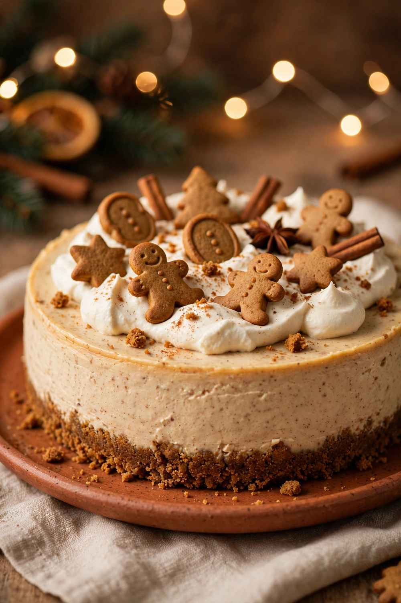
A spiced cheesecake on a gingersnap crust, with all the warm flavors of gingerbread. It is the cheesecake to make when the rest of the menu is simple.
Ingredients
- 1 1/2 cups gingersnap crumbs
- 6 tablespoons unsalted butter, melted
- 16 ounces cream cheese, softened
- 3/4 cup powdered sugar
- 1 cup heavy cream, whipped
- 1 teaspoon ground ginger
- 1 teaspoon ground cinnamon
- 1/4 teaspoon ground cloves
- Whipped cream and gingerbread cookies, to serve
Directions
- Mix the gingersnap crumbs and butter, press into a 9-inch springform pan, and chill for 30 minutes.
- Beat the cream cheese, powdered sugar, ginger, cinnamon, and cloves until smooth.
- Fold in the whipped cream.
- Spread over the crust and smooth the top.
- Refrigerate for at least 6 hours, or overnight. Top with whipped cream and gingerbread cookies before serving.
9. Chocolate Silk Pie

A silky chocolate filling in a cookie crust, topped with whipped cream and chocolate shavings. Rich, smooth, and completely oven-free.
Ingredients
- 1 chocolate cookie crust (9-inch, store-bought or homemade)
- 8 ounces semisweet chocolate, melted and slightly cooled
- 8 ounces cream cheese, softened
- 1/2 cup powdered sugar
- 1 cup heavy cream, whipped
- 1 teaspoon vanilla extract
- Chocolate shavings, to serve
Directions
- Beat the cream cheese and powdered sugar until smooth.
- Beat in the melted chocolate and vanilla.
- Fold in the whipped cream until no streaks remain.
- Spoon into the crust and smooth the top.
- Refrigerate for at least 4 hours, until set. Top with whipped cream and chocolate shavings.
10. Eggnog Cream Pie

A creamy eggnog-flavored pie with a dusting of nutmeg on top. It tastes like the holidays in a slice.
Ingredients
- 1 graham cracker crust (9-inch)
- 1 package (3.4 ounces) instant vanilla pudding mix
- 1 1/2 cups eggnog
- 1/2 teaspoon ground nutmeg, plus more to serve
- 1 cup heavy cream, whipped
- 1/2 teaspoon rum extract (optional)
Directions
- Whisk the pudding mix, eggnog, nutmeg, and rum extract (if using) until thick, about 2 minutes.
- Fold in half the whipped cream.
- Spoon into the crust and smooth the top.
- Refrigerate for at least 4 hours, until set.
- Top with the remaining whipped cream and a dusting of nutmeg.
Bars & slices
Bars are the workhorse of a crowd dessert table: one pan, clean slices, and easy to stack on a plate.
11. Peppermint Bark
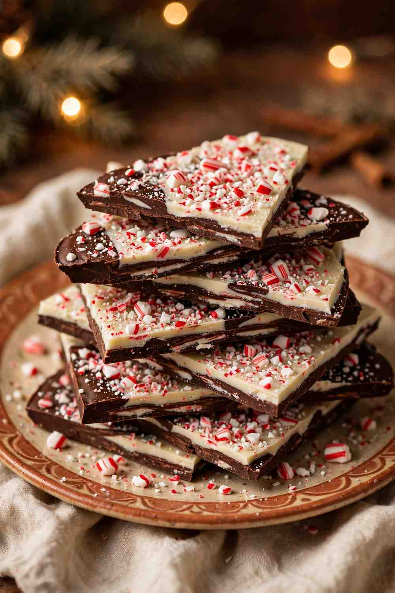
Layers of dark and white chocolate with crushed candy cane, broken into shards. It looks like stained glass and it takes minutes to make.
Ingredients
- 12 ounces dark chocolate, chopped
- 12 ounces white chocolate, chopped
- 1/2 teaspoon peppermint extract
- 1/2 cup crushed candy canes
Directions
- Line a baking sheet with parchment paper.
- Melt the dark chocolate in 30-second bursts in the microwave, stirring between each, until smooth.
- Spread the dark chocolate on the parchment and chill for 20 minutes.
- Melt the white chocolate the same way, stir in the peppermint extract, and spread over the dark layer.
- Sprinkle with crushed candy cane and chill for 1 hour. Break into shards.
12. Christmas Rocky Road
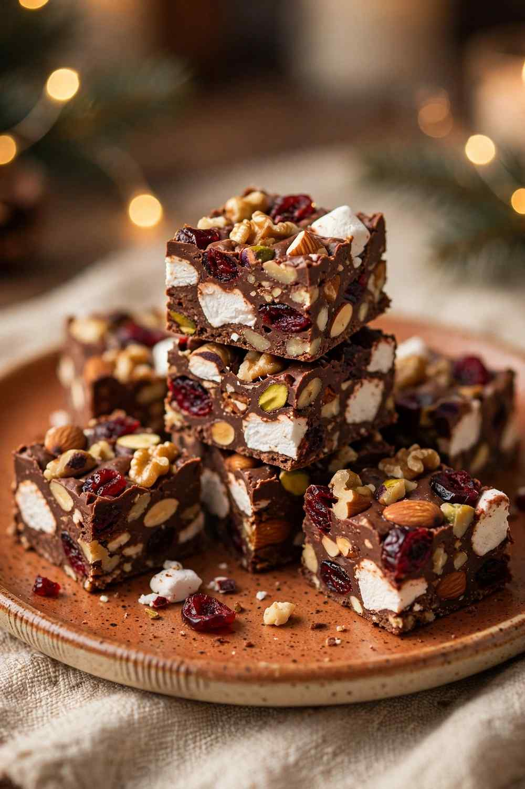
Chocolate, marshmallows, nuts, and dried cranberries set into a slab and cut into squares. Sweet, crunchy, and festive in every bite.
Ingredients
- 12 ounces semisweet chocolate, chopped
- 2 tablespoons unsalted butter
- 2 cups mini marshmallows
- 1 cup chopped walnuts or pecans
- 1/2 cup dried cranberries
- 1/2 cup crushed shortbread or graham crackers
Directions
- Line an 8-inch square pan with parchment paper.
- Melt the chocolate and butter in 30-second bursts in the microwave, stirring until smooth.
- Stir in the marshmallows, nuts, cranberries, and cookie crumbs.
- Press into the pan and chill for at least 2 hours.
- Lift out and cut into squares.
13. No-Bake Cookie Bars

Crushed cookies, chocolate, and a creamy layer pressed into a pan and chilled. They slice neatly and they travel well to a party.
Ingredients
- 2 cups chocolate cookie crumbs
- 1/2 cup unsalted butter, melted
- 8 ounces cream cheese, softened
- 1 cup powdered sugar
- 8 ounces semisweet chocolate, melted
- 1/2 cup crushed cookies, for topping
Directions
- Mix the cookie crumbs and butter, then press into an 8-inch square pan lined with parchment. Chill for 20 minutes.
- Beat the cream cheese and powdered sugar until smooth, then spread over the base.
- Pour the melted chocolate over the top and spread evenly.
- Sprinkle with crushed cookies.
- Chill for at least 3 hours, until firm, then cut into bars.
14. Peanut Butter Bars
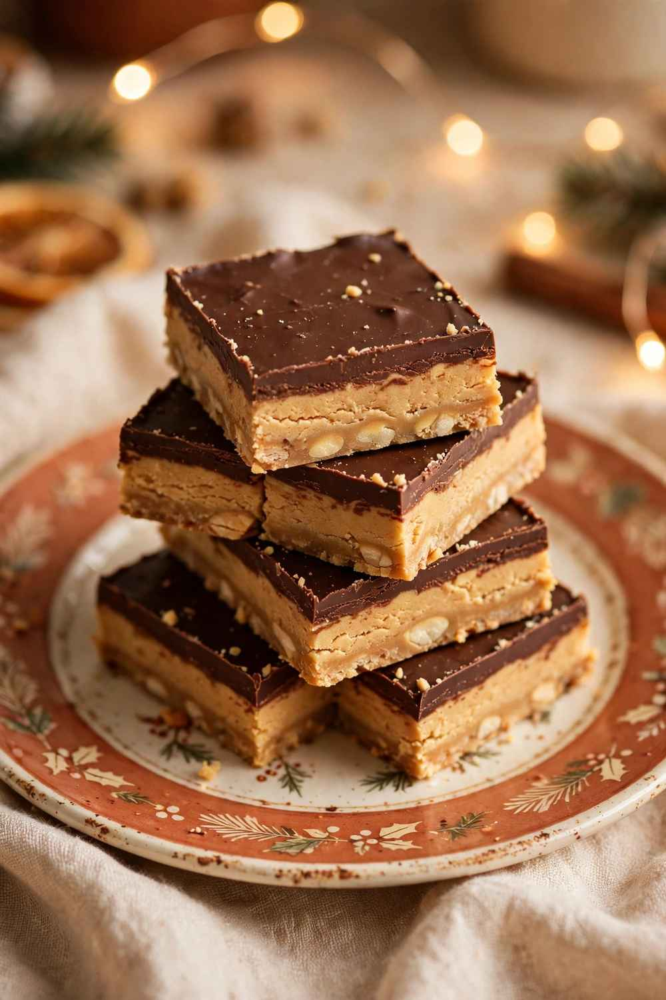
A thick peanut butter layer under a chocolate top, cut into squares. Rich, salty-sweet, and the bar everyone asks about.
Ingredients
- 1 cup creamy peanut butter
- 1/2 cup unsalted butter, melted
- 1 1/2 cups powdered sugar
- 2 cups graham cracker crumbs
- 8 ounces semisweet chocolate, melted
- 2 tablespoons chopped peanuts, for topping
Directions
- Line an 8-inch square pan with parchment paper.
- Stir the peanut butter, butter, powdered sugar, and crumbs until combined.
- Press into the pan and chill for 20 minutes.
- Pour the melted chocolate over the top and sprinkle with peanuts.
- Chill for at least 2 hours, until set, then cut into bars.
15. Cranberry Bliss Bars

White chocolate and cranberry bars with a cream cheese frosting and a cranberry drizzle. They taste like the coffee-shop favorite, made at home.
Ingredients
- 2 cups shortbread cookie crumbs
- 1/2 cup unsalted butter, melted
- 8 ounces cream cheese, softened
- 1/2 cup powdered sugar
- 1 cup white chocolate chips, melted
- 1/2 cup dried cranberries, chopped
- 1/4 cup cranberry sauce, for drizzling
Directions
- Mix the cookie crumbs and butter, press into an 8-inch square pan lined with parchment, and chill for 20 minutes.
- Beat the cream cheese and powdered sugar until smooth, then beat in the melted white chocolate.
- Fold in the chopped cranberries and spread over the base.
- Drizzle with cranberry sauce.
- Chill for at least 3 hours, until firm, then cut into bars.
Cups & parfaits
Individual cups and parfaits are made for parties — no slicing, no serving, just pick one up and enjoy.
16. Chocolate Mousse Cups
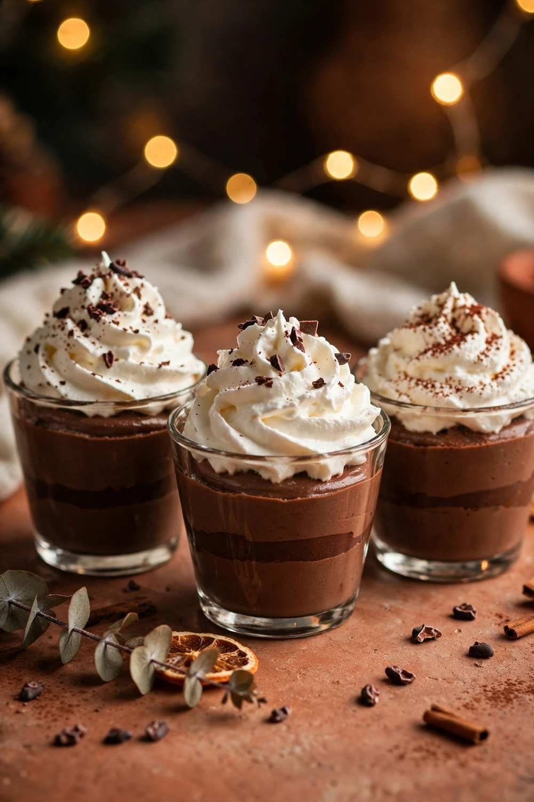
Light, airy chocolate mousse spooned into small cups with whipped cream on top. Elegant, rich, and easy to make ahead.
Ingredients
- 8 ounces semisweet chocolate, chopped
- 1 1/2 cups heavy cream, divided
- 2 tablespoons powdered sugar
- 1 teaspoon vanilla extract
- Whipped cream and chocolate shavings, to serve
Directions
- Heat 1/2 cup of the cream until it just simmers, then pour over the chocolate. Let it sit for 2 minutes.
- Stir until smooth, then stir in the vanilla. Cool to room temperature.
- Whip the remaining cream with the powdered sugar to soft peaks.
- Fold the whipped cream into the chocolate until no streaks remain.
- Spoon into small cups and chill for at least 2 hours. Top with whipped cream and shavings.
17. Peppermint Mousse Cups
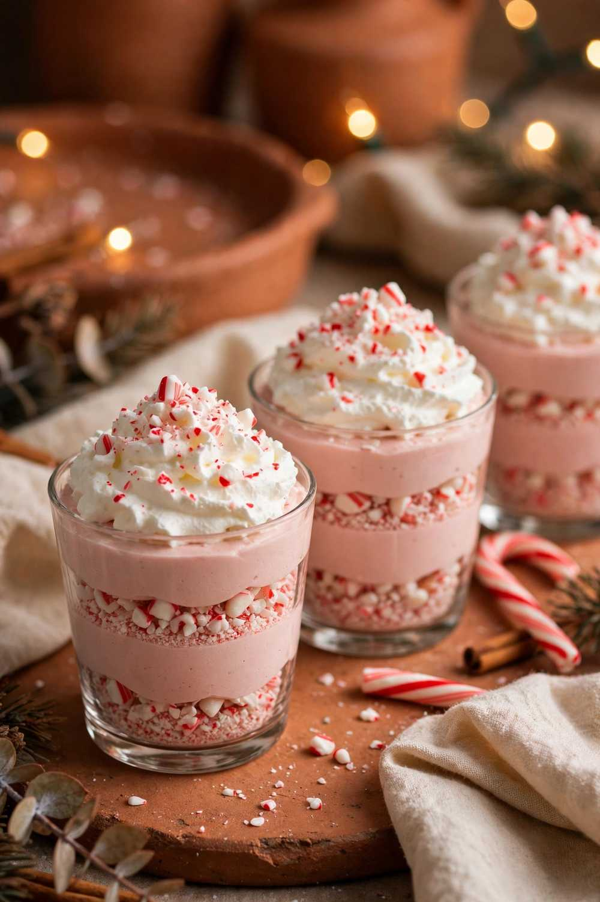
Cool peppermint mousse layered with crushed candy cane in a glass. They look beautiful on a dessert table and taste like a candy cane.
Ingredients
- 8 ounces white chocolate, chopped
- 1 1/2 cups heavy cream, divided
- 1/2 teaspoon peppermint extract
- 1/2 cup crushed candy canes
- Whipped cream, to serve
Directions
- Heat 1/2 cup of the cream until it just simmers, then pour over the white chocolate. Let it sit for 2 minutes.
- Stir until smooth, then stir in the peppermint extract. Cool to room temperature.
- Whip the remaining cream to soft peaks.
- Fold the whipped cream and half the crushed candy cane into the chocolate.
- Layer into small glasses with the remaining candy cane and chill for at least 2 hours.
18. Eggnog Panna Cotta

A silky eggnog panna cotta with a dusting of nutmeg, set in small glasses. It is the most elegant dessert on this list.
Ingredients
- 2 cups eggnog
- 1 cup heavy cream
- 1/4 cup sugar
- 2 teaspoons powdered gelatin
- 3 tablespoons cold water
- 1 teaspoon vanilla extract
- Ground nutmeg, to serve
Directions
- Sprinkle the gelatin over the cold water and let it bloom for 5 minutes.
- Heat the eggnog, cream, and sugar in a saucepan until hot but not boiling.
- Remove from the heat and stir in the gelatin and vanilla until dissolved.
- Pour into small glasses and chill for at least 4 hours, until set.
- Dust with nutmeg before serving.
19. Berry Trifle Cups
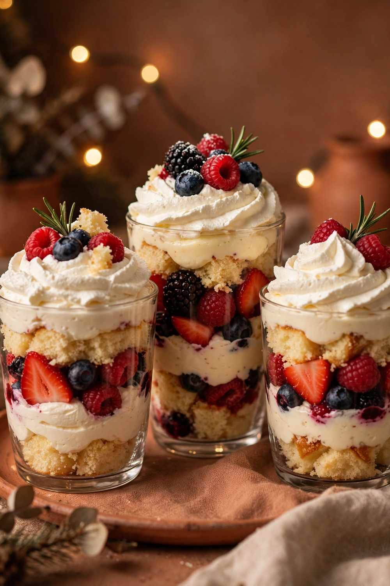
Layers of cake, cream, and berries in individual glasses. They are easy to assemble, they look stunning, and everyone gets their own.
Ingredients
- 1 store-bought pound cake or angel food cake, cubed
- 2 cups mixed berries (strawberries, raspberries, blueberries)
- 2 cups whipped cream or whipped topping
- 1/2 cup vanilla custard or pudding
- Fresh mint, to serve
Directions
- Layer cake cubes in the bottom of each glass.
- Spoon over a layer of custard, then a layer of berries.
- Repeat the layers until the glass is full.
- Top with whipped cream and a few berries.
- Chill for at least 1 hour before serving.
20. Tiramisu Cups

Coffee-soaked ladyfingers layered with mascarpone cream in small cups, dusted with cocoa. A classic, made party-friendly.
Ingredients
- 1 cup mascarpone cheese
- 1 cup heavy cream, whipped
- 1/4 cup powdered sugar
- 1 cup strong coffee, cooled
- 12 ladyfinger cookies
- Unsweetened cocoa powder, to serve
Directions
- Beat the mascarpone and powdered sugar until smooth, then fold in the whipped cream.
- Dip each ladyfinger quickly in the coffee — do not soak them.
- Layer ladyfingers and mascarpone cream in small glasses.
- Repeat the layers and smooth the top.
- Chill for at least 4 hours, then dust with cocoa before serving.
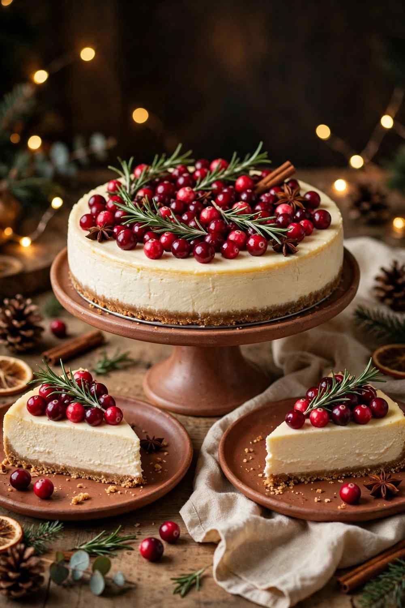
Chocolate & candy treats
The fun end of the dessert table — sweet, crunchy, and made for grazing all evening.
21. Chocolate-Covered Pretzels

Crunchy pretzels dipped in chocolate and finished with sprinkles or crushed candy cane. Sweet, salty, and a hit with kids.
Ingredients
- 12 ounces semisweet or milk chocolate, chopped
- 24 mini pretzels
- 1/4 cup sprinkles or crushed candy cane
Directions
- Line a baking sheet with parchment paper.
- Melt the chocolate in 30-second bursts in the microwave, stirring between each, until smooth.
- Dip each pretzel halfway in the chocolate, letting the extra drip off.
- Place on the parchment and sprinkle with sprinkles or candy cane.
- Chill for 20 minutes, until the chocolate is set.
22. Reindeer Chow
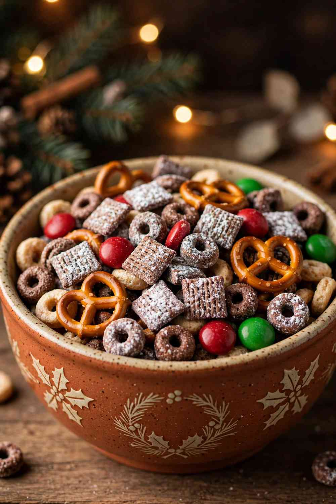
Chocolate-coated cereal tossed with powdered sugar, pretzels, and red and green candies. It is the snack mix everyone grazes on all night.
Ingredients
- 4 cups rice cereal squares
- 1 cup semisweet chocolate chips
- 1/4 cup creamy peanut butter
- 2 tablespoons unsalted butter
- 1 teaspoon vanilla extract
- 1 1/2 cups powdered sugar
- 1 cup mini pretzels
- 1/2 cup red and green candies
Directions
- Melt the chocolate chips, peanut butter, and butter in 30-second bursts in the microwave, stirring until smooth.
- Stir in the vanilla, then pour over the cereal and toss to coat.
- Add the powdered sugar to a large bag, add the coated cereal, and shake until covered.
- Spread on a baking sheet to cool for 15 minutes.
- Toss with the pretzels and candies.
23. Christmas Fudge

Rich, creamy fudge with cranberries and pistachios, cut into neat squares. It keeps for weeks and it makes a wonderful gift.
Ingredients
- 12 ounces white chocolate chips
- 1 can (14 ounces) sweetened condensed milk
- 1/2 cup dried cranberries
- 1/2 cup chopped pistachios
- 1 teaspoon vanilla extract
- 1 pinch salt
Directions
- Line an 8-inch square pan with parchment paper.
- Melt the white chocolate and condensed milk in 30-second bursts in the microwave, stirring until smooth.
- Stir in the cranberries, pistachios, vanilla, and salt.
- Spread into the pan and smooth the top.
- Chill for at least 3 hours, until firm, then cut into squares.
24. Toffee Bark
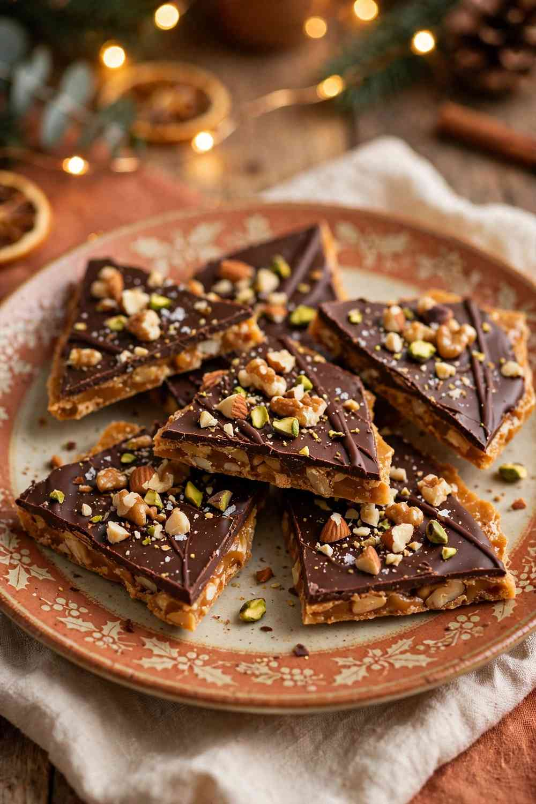
Buttery toffee topped with chocolate and chopped nuts, broken into shards. Sweet, crunchy, and dangerously easy to keep eating.
Ingredients
- 1 cup unsalted butter
- 1 cup brown sugar
- 12 ounces semisweet chocolate, chopped
- 1/2 cup chopped pecans or almonds
- 1 pinch salt
Directions
- Line a baking sheet with parchment paper.
- Melt the butter and brown sugar in a saucepan over medium heat, stirring, until it boils. Cook for 3 minutes without stirring.
- Pour onto the parchment and spread thin. Let it cool for 5 minutes.
- Melt the chocolate in 30-second bursts in the microwave and spread over the toffee.
- Sprinkle with nuts and salt. Chill for 1 hour, then break into shards.
25. Chocolate-Dipped Marshmallows
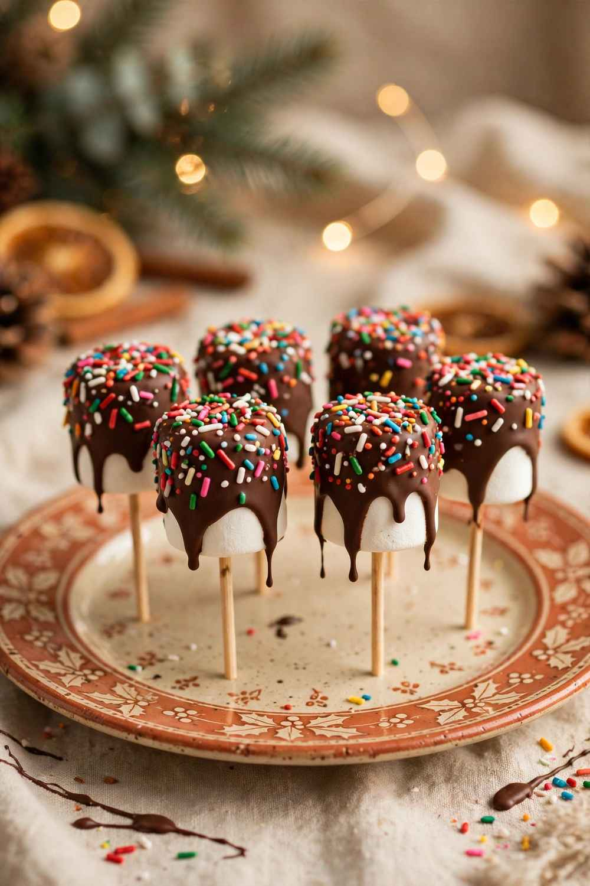
Fluffy marshmallows dipped in chocolate and rolled in sprinkles or crushed candy cane. They are fun to make with kids and they look like snowmen treats.
Ingredients
- 12 large marshmallows
- 8 ounces semisweet chocolate, chopped
- 1/4 cup sprinkles or crushed candy cane
- 12 lollipop sticks or wooden skewers
Directions
- Push a stick into each marshmallow.
- Melt the chocolate in 30-second bursts in the microwave, stirring between each, until smooth.
- Dip each marshmallow in the chocolate, letting the extra drip off.
- Roll in sprinkles or crushed candy cane.
- Stand upright in a glass to set for 20 minutes.
Make-ahead & storage tips
Almost everything in this roundup is made a day or two ahead — that is the whole point of no-bake desserts. Truffles and bars keep for a week in the refrigerator in an airtight container. Cheesecakes and pies need a full night in the fridge to set properly, so make them the day before the party. Mousse cups and parfaits can be assembled the morning of the party and kept cold until serving. Freeze what you cannot use, in portions, and thaw in the refrigerator overnight.
Related articles
More roundups from the same table:
- 30+ Christmas Cookie Recipes Everyone Will Love — classic, chocolate, spiced, filled and decorated cookies.
- 30+ Vintage Christmas Cookie Recipes — old-fashioned cookies from grandma’s kitchen.
- 25+ Christmas Snowball Cookie Recipes — buttery snowball cookies in every flavor.
- 25+ Christmas Side Dishes for Your Holiday Table — roasted vegetables, creamy potatoes, stuffing and cranberry sauce.
Keep exploring
- Browse the Desserts & Baking roundups — cookies, cakes, pies and sweet bakes.
- Browse all six categories — breakfast, lunch and dinner, desserts, air fryer, healthy recipes, and appetizers.
- More about the kitchen — what The Tasty Recipe Co is and how it works.
About The Tasty Recipe Co: Learn how we research, organize and review our food collections — see our About Us and Editorial Policy pages.
Recipe results can vary with ingredients, equipment, and technique. See our Disclaimer for food-safety and allergy notes.